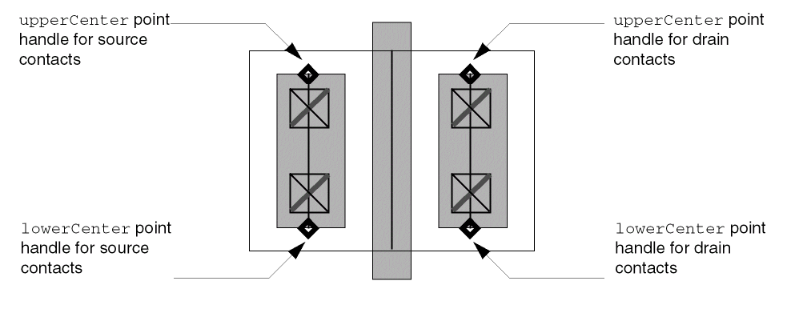

G
Code Examples
The examples in this appendix show how you might use Virtuoso® relative object design (ROD) functions to create some commonly used devices.
Using ROD to Create Multipart Paths
Using Stretchable Pcells
Creating a Bus
;; Create a bus with 7 offset subpathsprocedure( bus(cv layer)
(let (tfId layerWidth layerSpace)
tfId = techGetTechFile(cv)
layerWidth = techGetSpacingRule(tfId "minWidth" layer)
layerSpace = techGetSpacingRule(tfId "minSpacing" layer)
rodCreatePath(
?name "bus"
?layer layer
?pts list(20:-20 40:-20 40:-30 80:-30)
?width layerWidth
?justification "center"
?cvId cv
?offsetSubPath
list(
list(
?layer layer
?justification "left"
?sep layerSpace
) ;end subpath1
list(
?layer layer
?justification "left"
?sep (layerSpace * 2) + layerWidth
) ;end subpath2
list(
?layer layer
?justification "left"
?sep (layerSpace * 3) + (layerWidth * 2)
) ;end subpath3
list(
?layer layer
?justification "left"
?sep (layerSpace * 4) + (layerWidth * 3)
) ;end subpath4
list(
?layer layer
?justification "left"
?sep (layerSpace * 5) + (layerWidth * 4)
) ;end subpath5
list(
?layer layer
?justification "left"
?sep (layerSpace * 6) + (layerWidth * 5)
) ;end subpath6
list(
?layer layer
?justification "left"
?sep (layerSpace * 7) + (layerWidth * 6)
) ;end subpath7
) ;end list of lists
) ;end rodCreatePath
) ; end of let
) ; end of procedure
Creating a Contact Array
;; Create a contact arrayprocedure(buildCnts(cv layer1 layer2 layer3 width1 width3 length3
pathpnts terminal pinlabel enc offset chop)
; pinlabel is a boolean that determines whether a label will be
; created
let( ( fig )
fig = rodCreatePath(
?cvId cv
?layer layer1
?width width1
?pts pathpnts
?encSubPath
list(
list(
?layer layer2
?enclosure enc
?choppable chop
?pin t
?termName terminal
?pinLabel pinlabel
?pinLabelHeight length3
?pinLabelLayer "text"
) ;end enc sublist1
); end enc list
?subRect
list(
list(
?layer layer3
?width width3
?length length3
?endOffset offset
) ;end rect sublist1
) ;end subRect list
) ;end rodCreatePath
) ;end of let
) ;end of procedure
Creating a Guard Ring
;; Create guard ring
;;
;; This procedure is an example of how to create a guard ring
;; interactively with the layout editor. The sample code assumes that certain
;; design rules are already defined in your technology file. This code builds
;; three types of guard rings: ndiff, pdiff, and poly.
;; The arguments for this procedure are all optional.
;; If you specify no arguments, the guard ring defaults to ndiff.
;; The system prompts you for coordinates and you draw the guard ring
;; in the current open window.
;; Optionally, you can also specify the type of material and
;; cellview ID, and you can pass in a pointlist.
procedure(
buildGuardRing(
@optional (type "ndiff")
(winId hiGetCurrentWindow())
(pointList nil)
) ;end buildGuardRing
prog(
(
cvId tfId botLayNumber topLayNumber viaLayNumber
viaWidth botOLvia topOLvia botWidth
prompt1 prompt2 buildCnts_info
)
;; Check the cellView. Get the techfile ID.
if(
(cvId = geGetEditCellView(winId)) &&
cvId->objType == "cellView"
then
tfId = techGetTechFile(cvId)
else
printf("Invalid cellView %L\n" cvId)
return()
) ;end if
;; Find out what layers to use based on the type of guard ring.
botLayNumber =
case(type
("ndiff" techGetParam(tfId "ndiff"))
("pdiff" techGetParam(tfId "pdiff"))
("poly" techGetParam(tfId "poly"))
) ;end case
topLayNumber = techGetParam(tfId "metal1")
viaLayNumber = techGetParam(tfId "cont")
;; Find the design rules.
viaWidth = techGetSpacingRule(tfId "minWidth" viaLayNumber)
botOLvia = techGetOrderedSpacingRule(
tfId "minEnclosure" botLayNumber viaLayNumber)
topOLvia = techGetOrderedSpacingRule(
tfId "minEnclosure" topLayNumber viaLayNumber)
botWidth = (2 * botOLvia) + viaWidth
;; Build a global variable list for the enter function to use.
buildCnts_info = ncons(nil)
buildCnts_info->cv = cvId
buildCnts_info->layer1 = botLayNumber
buildCnts_info->layer2 = topLayNumber
buildCnts_info->layer3 = viaLayNumber
buildCnts_info->width1 = botWidth
buildCnts_info->width3 = viaWidth
buildCnts_info->length3 = viaWidth
buildCnts_info->pathpnts = pointList
buildCnts_info->terminal = nil
buildCnts_info->pinlabel = nil
buildCnts_info->enc = (botOLvia - topOLvia)
buildCnts_info->offset = -botOLvia
buildCnts_info->chop = t
;; Prompts for points if points where not passed in.
prompt1 = "Enter the first point in the coordinate list:"
prompt2 = "Enter the next point in the coordinate list:"
enterPath(
?prompts list(prompt1 prompt2)
?doneProc "guardRingDoneCB"
?pathWidth botWidth
?points pointList
?pathStyle "flush"
) ;end enterPath
return(t)
) ;end prog
) ;end procedure
;; The following procedure uses a callback from the enterFunction.
;; car(args) = winId ( Current window )
;; cadr(args) = exitStatus ( t if applied, nil if canceled )
;; caddr(args) = pointList ( points entered by user )
;;
;; Use the variable buildCnts_info (define within the buildGuardRing
;; procedure above) to contain the layer and design rule information.
;;
procedure(
guardRingDoneCB(@rest args)
let((pointList)
when(cadr(args) && (pointList = caddr(args)) &&
length(pointList) > 1
when(boundp(‘buildCnts_info) && listp(buildCnts_info)
length(buildCnts_info) == 14
buildCnts_info->pathpnts = pointList
rodCreatePath(
?cvId buildCnts_info->cv
?layer buildCnts_info->layer1
?width buildCnts_info->width1
?pts buildCnts_info->pathpnts
?choppable nil
?encSubPath list( list(
?layer buildCnts_info->layer2
?enclosure buildCnts_info->enc
?choppable buildCnts_info->chop
?pinLabel buildCnts_info->pinlabel
?pinLabelHeight buildCnts_info->length3
?pinLabelLayer buildCnts_info->pinlabel
) ) ;end encSubpath lists
?subRect list( list(
?layer buildCnts_info->layer3
?width buildCnts_info->width3
?length buildCnts_info->length3
?endOffset buildCnts_info->offset
) ) ;end of subRect lists
) ;end of rodCreatePath
) ;end of 1st when
) ;end of 2nd when
) ;end of let
) ;end of procedure
Creating a Shielded Path
;; Create a shielded pathprocedure( shieldedPath(cv) errset( (let (tfId)
rodCreatePath(
?name "shieldedPath"
?layer "metal1"
?pts list(2:-15 2:-5 15:-5 15:-15)
?width .8
?justification "center"
?cvId cv
?offsetSubPath
list(
list(
?layer "vapox"
?justification "left"
?sep 1
?width .4
) ;end of offset sublist1
list(
?layer "vapox"
?justification "right"
?sep 1
?width .4
) ;end of offset sublist2
) ;end of offset list of lists
) ;end of rodCreatePath
) ; end of let
t
) ; end of errset
) ; end of procedure
Creating a Transistor
;; Create a gateprocedure( tran(cv w l name)
let((tfId pext pcs pds cw cs m1oc doc grid ptslist tran)
tfId = techGetTechFile(cv)
pext = techGetSpacingRule(tfId "minExtension" "poly")
pcs = techGetSpacingRule(tfId "minSpacing" "poly" "cont")
pds = techGetSpacingRule(tfId "minSpacing" "poly" "ndiff")
cw = techGetSpacingRule(tfId "minWidth" "cont")
cs = techGetSpacingRule(tfId "minSpacing" "cont")
m1oc = techGetOrderedSpacingRule(tfId "minEnclosure"
"metal1" "cont")
doc = techGetOrderedSpacingRule(tfId "minEnclosure"
"ndiff" "cont")
grid = techGetMfgGridResolution(tfId)
ptslist = list(0:0 0:(w + 2 * pext))
tran = rodCreatePath(
?name name
?layer "poly"
?pts ptslist
?width l
?termName "G"
?justification "center"
?cvId cv
?offsetSubPath
list(
list(
?layer "poly"
?beginOffset 0.0
?endOffset -(pext + w + pds)
?width l
?pin t
?termName "G"
) ;end of offset sublist1
list(
?layer "poly"
?beginOffset -(pext + w + pds)
?endOffset 0.0
?width l
?pin t
?termName "G"
) ;end of offset sublist2
list(
?layer "metal1"
?justification "left"
?sep pcs - m1oc
?beginOffset m1oc - pext - doc
?endOffset m1oc - pext - doc
?width cw + 2 * m1oc
?pin t
?termName "S"
) ;end of offset sublist3
list(
?layer "metal1"
?justification "right"
?sep pcs - m1oc
?beginOffset m1oc - pext - doc
?endOffset m1oc - pext - doc
?width cw + 2 * m1oc
?pin t
?termName "D"
) ;end of offset sublist4
list(
?layer "ndiff"
?justification "left"
?sep 0.0
?beginOffset -pext
?endOffset -pext
?width doc + cw + pcs
?termName "S"
) ;end of offset sublist5
list(
?layer "ndiff"
?justification "left"
?sep 0.0
?beginOffset -pext
?endOffset -pext
?width 2 * grid
?pin t
?termName "S"
) ;end of offset sublist6
list(
?layer "ndiff"
?justification "right"
?sep 0.0
?beginOffset -pext
?endOffset -pext
?width doc + cw + pcs
?termName "D"
) ;end of offset sublist7
list(
?layer "ndiff"
?justification "right"
?sep 0.0
?beginOffset -pext
?endOffset -pext
?width 2 * grid
?pin t
?termName "D"
) ;end of offset sublist8
)
?subRect
list(
list(
?layer "cont"
?length cw
?width cw
?space cs
?justification "left"
?sep pcs
?beginOffset -(pext + doc)
?endOffset -(pext + doc)
) ;end of subRect sublist1
list(
?layer "cont"
?length cw
?width cw
?space cs
?justification "right"
?sep pcs
?beginOffset -(pext + doc)
?endOffset -(pext + doc)
) ;end of subRect sublist2
) ;end of subRect list of lists
) ;end of rodCreatePath
) ;end of let
) ;end of procedure
Getting the Resistance for a ROD Path
The following procedures create and update a user-defined handle for the resistance of a ROD path. All three procedures require the ROD object ID (rodId) as input.
When you calculate the resistance of a ROD path from within a Pcell, you only need to execute the createResHandle procedure once inside the Pcell because the geometries in a Pcell are recreated every time the Pcell is evaluated.
When you calculate the resistance of a ROD path from outside a Pcell, such as in an open cellview window, you must update the resistance handle (res) by executing the createResHandle procedure in the Command Interpreter Window whenever you make a change to the ROD path, such as stretching or chopping it.
getRodPathLength Procedure
;; This procedure goes through the list of points in a ROD path
;; and adds the lengths of the segments. Returns the total length.
;;
procedure(getRodPathLength(rodId) let( ( (total_length 0) ) ;end variables for let for(i 0 (rodId~>numSegments - 1) total_length = total_length + rodGetHandle(rodId symbolToString(concat("length" i)))
) ;end of for
total_length
) ;end of let
) ;end of procedure
getRodPathRes Procedure
;; This procedure gets the length and sheet resolution values for
;; a ROD path, then calculates and returns the resistance.
;; Remember to load the procedure getRodPathLength
procedure(getRodPathRes(rodId)
let(( corner_value sheet_res path_width num_segs num_corners
total_length num_squares )
;; Percentage of a square. Usually, values from 0.5 to 0.65
;; are used for corner resistance. The rodPcells sample library
;; uses .559 for corner resistance, so that value is used here.
;; Adjust the value of corner_value to suit your needs.
corner_value = .559
;; Get the sheet resistance for the current layer.
sheet_res = techGetElectricalRule(techGetTechFile(rodId~>cvId)
"sheetRes" rodId~>dbId~>layer)
;; Get path width, number of segments, number of corners,
;; and total path length.
path_width = rodId~>dbId~>width
num_segs = rodId~>numSegments
num_corners = num_segs - 1
total_length = getRodPathLength(rodId)
;; Now compute the number of squares of resistance material
;; and calculate the total resistance value.
num_squares = (total_length / path_width) -
(num_corners * corner_value)
;; Return the resistance value.
num_squares * sheet_res
) ;end of let
) ;end of procedure
createResHandle Procedure
;; This procedure creates or updates the value of a user-defined
;; resistance handle ("res") for a ROD path, and returns the
;; resistance value.
;;
procedure(createResHandle(rodId)
let((res)
when(rodId~>dbId~>objType == "path" &&
(res = getRodPathRes(rodId))
when((rodHandle = rodGetHandle(rodId "res"))
rodDeleteHandle(rodId "res")
) ;end of 2nd when
rodCreateHandle(
?rodObj rodId
?name "res"
?type "float"
?value res
) ;end of rodCreateHandle
) ;end of 1st when
) ;end of let
) ;end of procedure
Stretchable MOS Transistor
This is an example of a simple MOS transistor with stretchable contact arrays and user-defined functions.This code might not work with your technology file, but you can modify the code as desired. For more complex MOS code examples, see the
The parameters for the sample mos transistor Pcell are specified as follows:
| Parameter Name | Default Value | Parameter Description |
|---|---|---|
Stretch handles are assigned to the transistor Pcell as follows:
-
To make the source contacts stretchable, the
upperCenterandlowerCenterpoint handles on the source contact array are assigned to the Pcell parameterleftcovwith the stretch typerelativeand the stretch directionY. -
To make the drain contacts stretchable, the
upperCenterandlowerCenterpoint handles on the drain contact array are assigned to the Pcell parameterrightcovwith the stretch typerelativeand the stretch directionY.

Code for simplemos Transistor
devices(
tcCreateDeviceClass("layout" "simplemos"
; class parameter name value pairs
( ( xtrType "ndiff" ) )
; formal parameters (name-value pairs)
(
(w 1.3)
(l 0.25)
(leftcov 1.0)
(rightcov 1.0)
(leftPos "top")
(rightPos "top")
) ; end formal parameters
; access controls techfile class for layout design rules
; and layer info
tfId = techParam("tfId")
poly = techParam("poly") ; poly layer number
diff = techParam(xtrType) ; xtrType diff layer number
contact = techParam("cont") ; cont layer number
metal1 = techParam( "metal1") ; metal1 layer number
pext = techGetSpacingRule(tfId "minExtension" poly)
pcs = techGetSpacingRule(tfId "minSpacing" poly contact)
cw = techGetSpacingRule(tfId "minWidth" contact)
cs = techGetSpacingRule(tfId "minSpacing" contact)
m1oc = techGetOrderedSpacingRule(tfId "minEnclosure" metal1
contact)
doc = techGetOrderedSpacingRule(tfId "minEnclosure" diff
contact)
dop = techGetOrderedSpacingRule(tfId "minEnclosure" diff poly)
pps = techGetSpacingRule(tfId "minSpacing" poly )
grid = techGetMfgGridResolution(tfId)
;************* draw gate with connectivity *************
gate = rodCreateRect(
?layer poly
?length w + (2 * pext)
?width l
) ; end gate rodCreateRect
topPin = rodCreateRect(
?layer poly
?length pext
?width l
?termName "G"
?pin t
) ; end topPin rodCreateRect
botPin = rodCreateRect(
?layer poly
?length pext
?width l
?termName "G"
?pin t
); end botrodCreateRectPin
dbReplaceProp(gate~>dbId "lxBlockOverlapCheck" "boolean" t)
rodAlign(
?refObj gate
?refHandle "lowerLeft"
?alignObj botPin
?alignHandle "lowerLeft"
) ; end rodAlign
rodAlign(
?refObj gate
?refHandle "upperLeft"
?alignObj topPin
?alignHandle "upperLeft"
) end rodAlign
; ******** draw source contacts and source diffusion*************
metOvDiff = doc - m1oc
metOvPoly = pcs - m1oc
cntsw = w - (2*doc)
length = ((cntsw + (2*m1oc)) * leftcov/grid)*grid
minLength = cw + (2 * m1oc)
when(length < minLength
length = minLength
) ; end when
leftCnts = rodCreatePath(
?layer metal1
?width (2*m1oc)+cw
?pts list(0:0 0:length)
?justification "center"
?subRect list( list(
?layer contact
?length cw
?width cw
?space cs
?endOffset -m1oc
)) ; end subrect list
?termName "S"
?pin t
) ; end leftCnts rodCreatePath
leftDiff = rodCreateRect(
?layer diff
?width cw + doc + pcs + l/2
?length w
) ; end leftDiff rodCreatePath
rodAlign(
?refObj gate
?refHandle "cC"
?alignObj leftDiff
?alignHandle "cR"
) ; end rodAlign
; ******** make source contacts stretchable *********
; The user-defined function "contcov" sets a range for the
; contacts from a 100% coverage to minimum contact width
rodAssignHandleToParameter(
?parameter "leftcov"
?rodObj leftCnts
?handleName list("upperCenter" "lowerCenter")
?displayName "leftcov"
?stretchDir "y"
?stretchType "relative"
?userFunction "contcov"
) ; end rodAssignHandleToParameter
; ******** set source contact alignment *********
; This is an example where rodAssignHandleToParameter is
; being used to set a parameter value and where no display
; is required.
; The userfunction "mystretch" checks which handle is
; currently being stretched and then returns the location
; where the contacts should be aligned, either to the top
; or bottom.
rodAssignHandleToParameter(
?parameter "leftPos"
?rodObj leftCnts
?handleName list("upperCenter" "lowerCenter")
?stretchType "relative"
?userFunction "mystretch"
) ; end rodAssignHandleToParameter
case( leftPos
("top"
rodAlign(
?refObj gate
?refHandle "uL"
?alignObj leftCnts
?alignHandle "uR"
?xSep -metOvPoly
?ySep -(pext + metOvDiff)
) ; end rodAlign
) ; end top
("bottom"
rodAlign(
?refObj gate
?refHandle "lowerLeft"
?alignObj leftCnts
?alignHandle "lowerRight"
?xSep -metOvPoly
?ySep pext + metOvDiff
); end rodAlign
) ; end bottom
); end case
; ******** draw drain contacts and drain diffusion*************
length = ((cntsw + (2*m1oc)) * rightcov/grid)*grid
when(length < minLength
length = minLength
) ; end when
rightCnts = rodCreatePath(
?layer metal1
?width (2*m1oc)+cw
?pts list(0:0 0:length)
?justification "center"
?subRect list( list(
?layer contact
?length cw
?width cw
?space cs
?endOffset -m1oc
)) ; end subrect lists
?termName "D"
?pin t
) ; end rightCnts rodCreatePath
rightDiff = rodCreateRect(
?layer diff
?width pcs + cw + doc + l/2
?length w
) ; end rightDiff rodCreatePath
rodAlign(
?refObj gate
?refHandle "cC"
?alignObj rightDiff
?alignHandle "cL"
) ; end rodAlign
; ******** make drain contacts stretchable *********
rodAssignHandleToParameter(
?parameter "rightcov"
?rodObj rightCnts
?handleName list("upperCenter" "lowerCenter")
?displayName "rightcov"
?stretchDir "y"
?stretchType "relative"
?userFunction "contcov"
) ; end rodAssignHandleToParameter
; ******** set drain contact alignment *********
rodAssignHandleToParameter(
?parameter "rightPos"
?rodObj rightCnts
?handleName list("upperCenter" "lowerCenter")
?stretchType "relative"
?userFunction "mystretch"
) ; end rodAssignHandleToParameter
case( rightPos
("top"
rodAlign(
?refObj gate
?refHandle "uR"
?alignObj rightCnts
?alignHandle "uL"
?xSep metOvPoly
?ySep -(pext + metOvDiff)
) ; end rodAlign
) ; end top
("bottom"
rodAlign(
?refObj gate
?refHandle "lowerRight"
?alignObj rightCnts
?alignHandle "lowerLeft"
?xSep metOvPoly
?ySep pext + metOvDiff
) ; end rodAlign
); end bottom
); end case
) ; end tcCreateDeviceClass
; Declare a cvs of device class simplemos called simplepmos
; and simplenmos
tcDeclareDevice(
"layout"
"simplemos"
"simplepmos"
( ( xtrType "pdiff" ) )
) ; end tcDeclareDevice
tcDeclareDevice(
"layout"
"simplemos"
"simplenmos"
( ( xtrType "ndiff" ) )
) ; end tcDeclareDevice
) ; end devices
Code for contcov User-Defined Function
;; contcov is a user-defined function specified for the pcell created
;; by simplemos.il.
; The user-defined function "contcov" sets a range for the contacts
; from 100% coverage to minimum contact width for the layer from the
; technology file.
procedure( contcov(myDefstruct)
let(((returnVal myDefstruct->paramVal + myDefstruct->increment)
tfId metal1 contact m1oc cw length minLength)
tfId = techGetTechFile((myDefstruct->rodObj)~>cvId)
metal1 = techGetParam(tfId "metal1")
contact = techGetParam(tfId "cont")
m1oc = techGetOrderedSpacingRule(tfId "minEnclosure"
metal1 contact)
cw = techGetSpacingRule(tfId "minWidth" contact)
length = (myDefstruct->rodObj)~>length * returnVal
minLength = cw + 2*m1oc
when(returnVal > 1.0 || length < minLength
progn(warn("returnVal for parameter %s must be < 1
or > %f\n" myDefstruct->parameter cw)
if(returnVal > 1.0 then
returnVal = 1.0
else
returnVal = cw
) ; endif
) ; end progn
) ; end when
returnVal
) ; end of let
) ; end of procedure
Code for myStretch User-Defined Function
;; myStretch.il is a user-defined function specified for the pcell
;; created by simplenmos.il.
; The user-defined function "mystretch" checks which handle is
; currently being stretched and then returns the location where
; the contacts should be aligned, either to the top or bottom.
procedure( mystretch(myDefstruct)
let( (leftPos)
if(myDefstruct->handleName == "upperCenter"
then
leftPos = "bottom"
else
leftPos = "top"
) ; endif
myDefstruct->paramValue = leftPos
) ;end let
) ; end procedure
Return to top